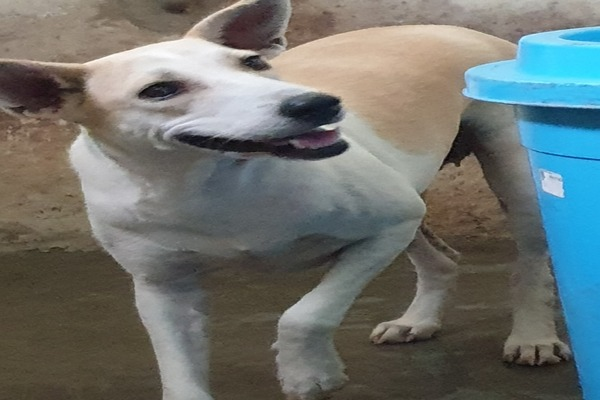

This is Indrani a 9 month old female.
Bibi, Indrani, Kanmani, Marimuthu, Rama, Sintamani are 6 siblings abandoned outside our shelter. They were tightly tied up in a plastics bag and were severely malnourished and dehydrated as we do not know how long they had been out there. This is part of the reason that FKF choose to keep its location private for the most part. She looks like a tough cookie but she is a Scooby-doo inside. And just like Scooby, she is very friendly.
![ This is Jennifer a 6 year old female. Jeniffer was rescued as a pregnant mom (her baby is Sharon). She was found with multiple nail gun wounds with the nail getting as far as into her bones. An excrutiangly painful rescue as we found it hard to touch her anywhere. This was a difficult rescue as we felt her pain every step of the way. Her baby was delivered unharm. Both Mom & baby (Sharon) are beautiful girls now. She is a very friendly girl. They are active and love running about. Always full of energy.d.](assets/img/jennifer.jpg){kind=link}
This is Jennifer a 6 year old female.
Jeniffer was rescued as a pregnant mom (her baby is Sharon). She was found with multiple nail gun wounds with the nail getting as far as into her bones. An excrutiangly painful rescue as we found it hard to touch her anywhere. This was a difficult rescue as we felt her pain every step of the way. Her baby was delivered unharm. Both Mom & baby (Sharon) are beautiful girls now. She is a very friendly girl. They are active and love running about. Always full of energy.d.
{kind=link}
This is Jill a 4 year old female.
This girl was found with steel wire wrapped around her, cutting deep into her skin and bones. Beside her was her brother who we named Jack (Jack died during surgery). After multiple surgeries, Jill is now one healthy girl. She is super duper friendly. She is a natural born babysitter who loves taking care of all other kiddies around her. Made from 100% pure love.
{kind=link}
This is Kalyu a 5 year old male.
This boy was beaten and left to death with severe spinal injury. When we got him, he couldn't walk and was under extreme pain. But you wouldn't guess that now, as this boy is one handsome looking fellow. Handsome and loves to be the center of attention. Always the star and eager to please, this boy can sweep anyone off their feet especially women.
{kind=link}
This is Kanchana a3 month old female.
Kamani was found dying on the road. Probably a hit and run case. She is a very playful kid and super excited to please.

This is Kanamani a 3 year old female.
This little puppy was thrown into a fire pit. Rescued by a local feeder, when we got to her, she didn't seem to have any skin on her. Though she is a beautiful girl now. She is an alpha female. Strong protective girl who is loyal and faithful to those close to her. She is an amazing companion to have around.
{kind=link}
This is Karna a 9 month old female.
Bibi, Indrani, Kanmani, Marimuthu, Rama, Sintamani are 6 siblings abandoned outside our shelter. They were tightly tied up in a plastice bag and were severely malnourished and deyhdrated as we do not know how long they had been out there. This is part of the reason that FKF choose to keep its location private for the most part. She is a brave girl and always ready to befriend anyone who comes near her.
{kind=link}
This is katayan a 1 year old male.
Kumaran, Valli and Vellan are siblings. They were found in an open field with multiple fractured bones. They were about 3 months old when rescued. With no mother in sight, they were brought to the vet. We had almost given up hope, but these kids pulled through. The siblings (Kumaran, Valli and Vellan) are alpha dogs in the making. Loyal, faithful and disciplined. Easy to maintain and make for excellent faithful companions.